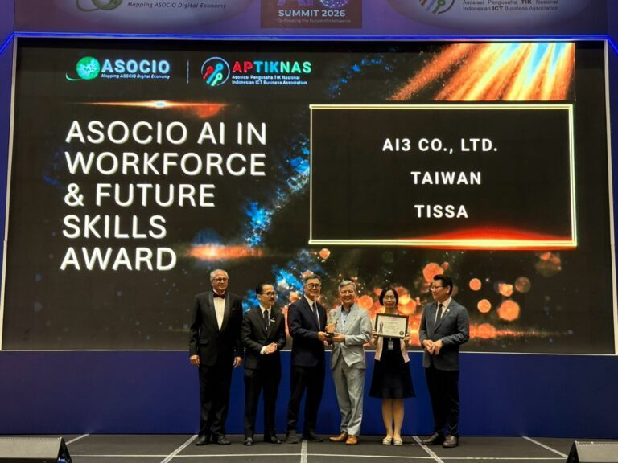
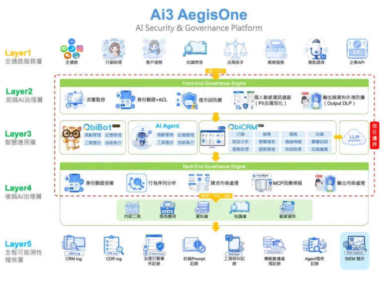
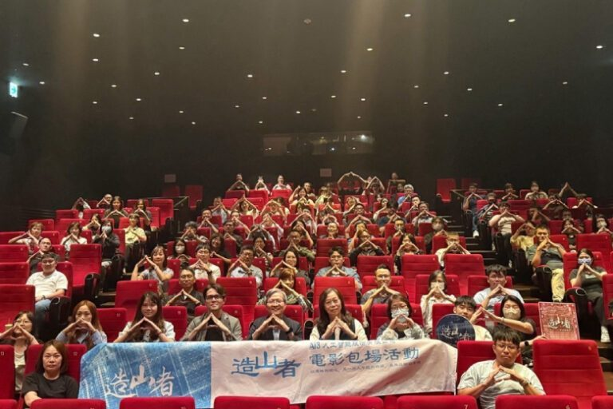
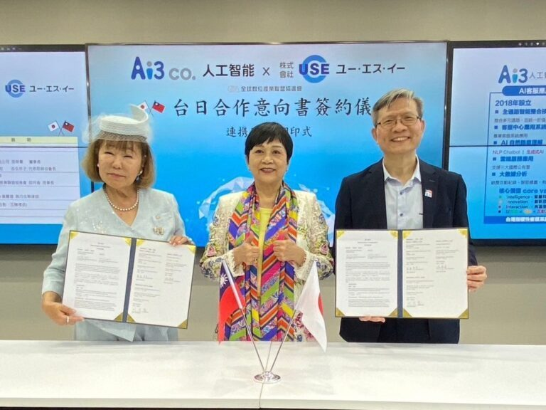

最近在忙什麼，以及我們怎麼想。
31 篇最新消息、23 篇媒體報導、35 篇專欄文章，全部來自現行官網。
最新消息

Ai3榮獲2026 ASOCIO國際大獎
深耕Agentic AI與人機協作 樹立未來數位勞動力新典範

Ai3獲全台首張ISO/IEC 42001認證 打造治理內建AI客服新標準
AI治理正式從制度管理走向平台治理，打造治理內建AI客服新標準

從《造山者》到資訊服務的領航者：Ai3 的人工智能願景
與夥伴及同仁共同呼應『造山者精神』
媒體報導
Ai3獲全台首張ISO/IEC 42001認證 打造治理內建AI客服新標準
AI治理正式從制度管理走向平台治理，打造治理內建AI客服新標準
2025卓越登峰大賞：Ai3打造客服革命，以科技創新書寫AI未來
在這個生成式AI快速崛起的時代，企業數位轉型不再只是潮流口號，而是攸關競爭力存續的核心命題。

經濟日報
台日強強聯手 共創AI新紀元
Ai3與日本USE株式會社簽署合作備忘錄，結合雙方AI技術，共同開發創新解決方案，推動數位化進程，創造全球市場新機遇